I have standard pants with rings that keep me attached to the spacecraft. It would be pretty bad if I floated away from the ship. This is may sound weird, but we astronauts wear extra absorbent diapers because, if you didn't know, there aren't any restrooms in space.
 Other Parts of a Space Suit